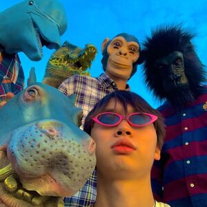
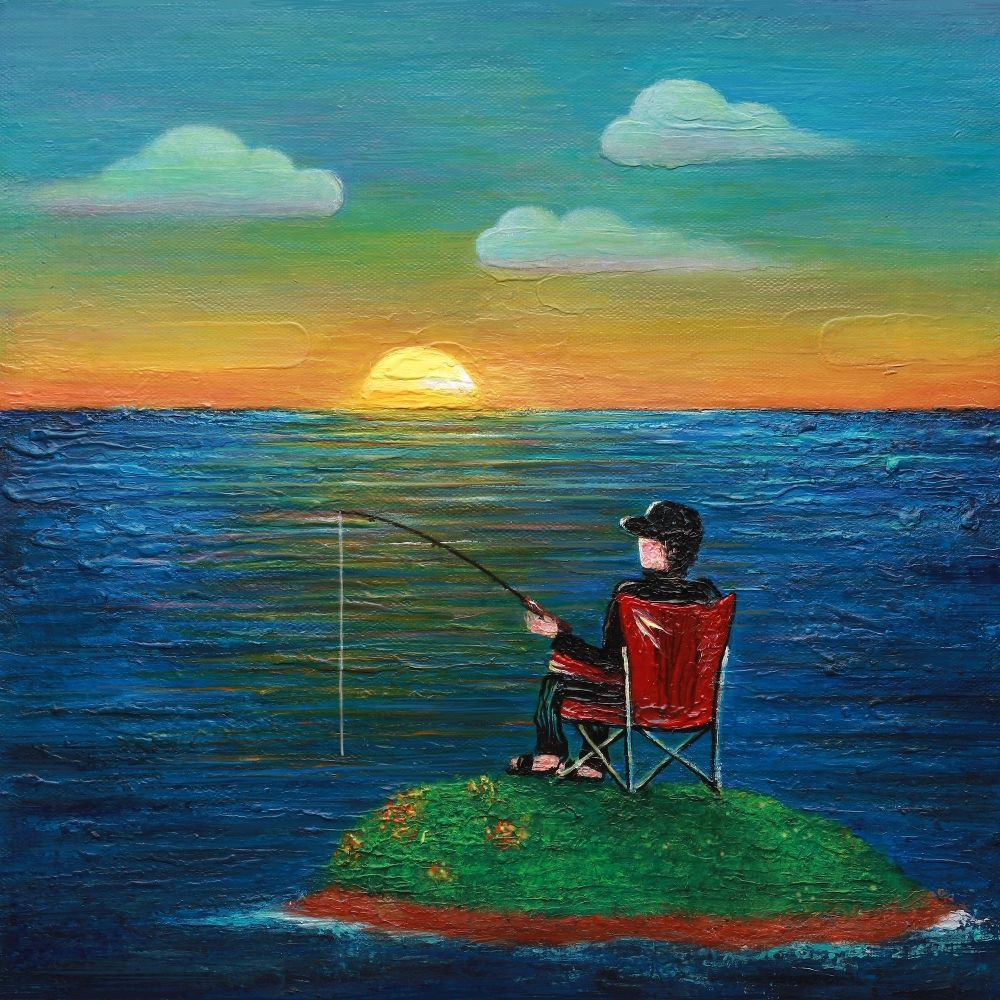

sogumm - 위로
1. monologue
2. 위로 (Feat. 10cm)
sogumm을 그다지 좋아하지 않던 나를 입덕하게 만들어준 앨범. 뭉게지는 sogumm의 멈블랩이 이렇게 매력적일 수 있다는걸 처음 알았다.
2. 위로 (Feat. 10cm)
sogumm을 그다지 좋아하지 않던 나를 입덕하게 만들어준 앨범. 뭉게지는 sogumm의 멈블랩이 이렇게 매력적일 수 있다는걸 처음 알았다.

Hippo X 불안한yee - Maybe
1. Maybe
2. 강변안삼 (Feat. meenoi)
3. Purple (Feat. Soovi)
친구가 블로그에 올린 걸 보고 앨범 커버가 마음에 들어서 들어봤는데 너무 좋았다. 3곡 모두 버릴수 없는 내 최애 앨범 중 하나. 말랑말랑한 느낌의 듣기좋은 노래.
2. 강변안삼 (Feat. meenoi)
3. Purple (Feat. Soovi)
친구가 블로그에 올린 걸 보고 앨범 커버가 마음에 들어서 들어봤는데 너무 좋았다. 3곡 모두 버릴수 없는 내 최애 앨범 중 하나. 말랑말랑한 느낌의 듣기좋은 노래.

pH-1 - The Island Kid
1. Christ
2. Donut (Feat. Jay Park)
3. Game Night
4. Cuckoo
5. Escobar (Feat. Owen Ovadoz)
6. '15 (Feat. G.Soul)
비록 EP 규모의 크지 않은 앨범이지만 그 내용물은 아주 꽉꽉 차있다. 경쾌한 느낌의 타이틀곡 Donut을 비롯해서 Game Night, Escobar 등 버릴 것 하나 없는 앨범으로 pH-1이 조금 더 대중들에게 알려졌으면 하는 바램이다.
2. Donut (Feat. Jay Park)
3. Game Night
4. Cuckoo
5. Escobar (Feat. Owen Ovadoz)
6. '15 (Feat. G.Soul)
비록 EP 규모의 크지 않은 앨범이지만 그 내용물은 아주 꽉꽉 차있다. 경쾌한 느낌의 타이틀곡 Donut을 비롯해서 Game Night, Escobar 등 버릴 것 하나 없는 앨범으로 pH-1이 조금 더 대중들에게 알려졌으면 하는 바램이다.